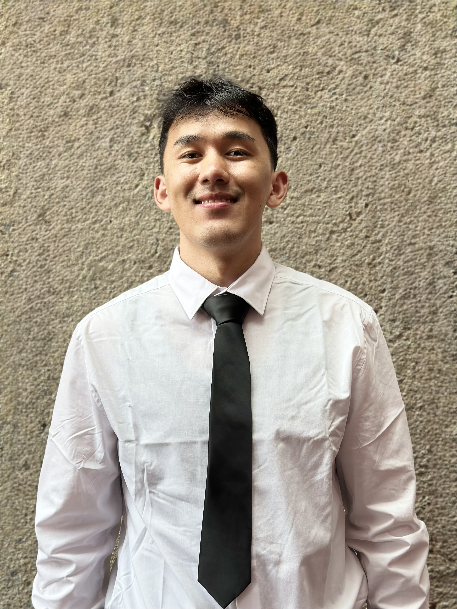

IN PROGRESS · EXPECTED DEC 2027
B.S. Computer Science
Queens College, CUNY
Continuing my computer science studies and building on a strong foundation in programming and problem solving.
ASPIRING SOFTWARE ENGINEER · QUEENS, NY
Hey, I’m Jiten — a computer science student at Queens College who enjoys building software, solving problems, and creating interactive experiences.
Aspiring software engineer · CS student
Aspiring software engineer · CS student
I’m pursuing a B.S. in Computer Science at Queens College after completing my A.S. at LaGuardia Community College, where I earned a 3.8 GPA. I’m drawn to software engineering because it brings together analytical thinking, collaboration, and building things people can use.
I’ve worked on VR game experiences, supported students as a mentor, and strengthened my programming foundations through coursework in data structures, object-oriented programming, and discrete math.
Explore my educationComputer science, strong fundamentals, and room to keep growing.
IN PROGRESS · EXPECTED DEC 2027
Queens College, CUNY
Continuing my computer science studies and building on a strong foundation in programming and problem solving.
COMPLETED DEC 2025
LaGuardia Community College, CUNY
GPA: 3.8 · Foundation Scholar · Dean’s List, Spring and Fall 2024 and 2025.
RELEVANT COURSEWORK Data Structures & Algorithms · Object-Oriented Programming · Discrete Math · Calculus I & II
Coursework and research that let me explore software, circuits, data, and my community.
A typing game with timed rounds, real-time accuracy feedback, increasing difficulty, and a score system.
Designed and simulated a JK flip-flop circuit with logic gates and an up/down counter to explore sequential logic.
Explored machine learning approaches for analyzing wireless sensor network data as part of the QSTEM Research Scholar program.
Researched community history, housing conditions, challenges, and possible solutions, sharing the findings in a paper and poster.
A calculus course project exploring the shape and dimensions of a can.
Three experiences, one growing path.
Swipe through the years and select a role for details.
Combining software development and game logic to make intuitive, engaging VR and mobile experiences.
Deepening my skills in algorithms, data structures, object-oriented programming, and collaborative development.
OPEN TO SOFTWARE ENGINEERING OPPORTUNITIES